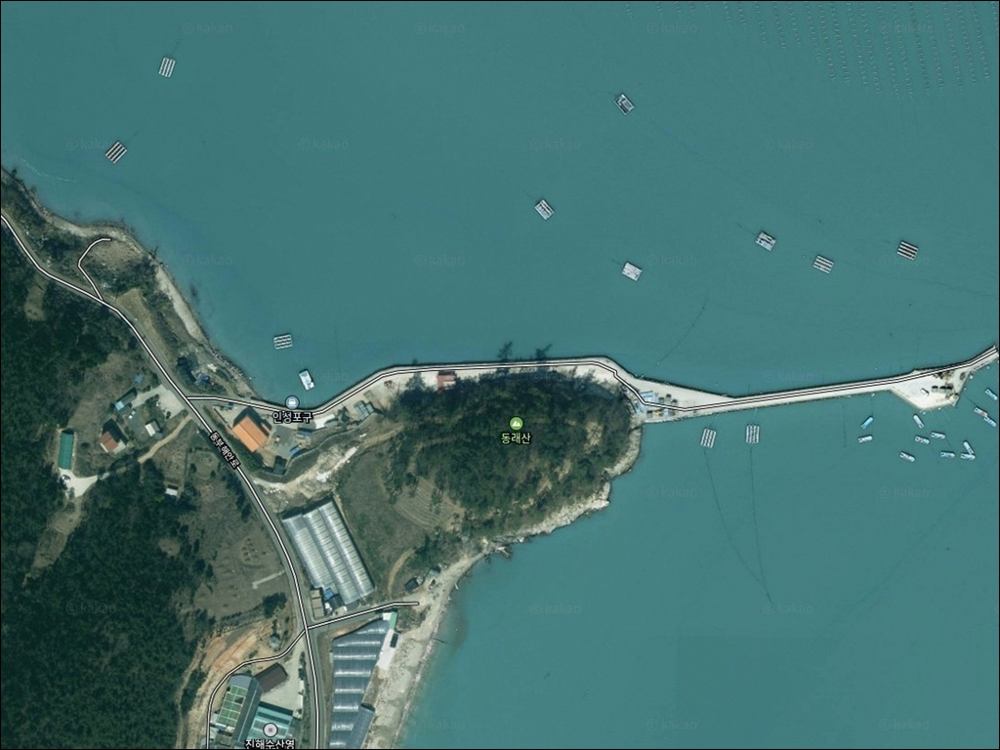
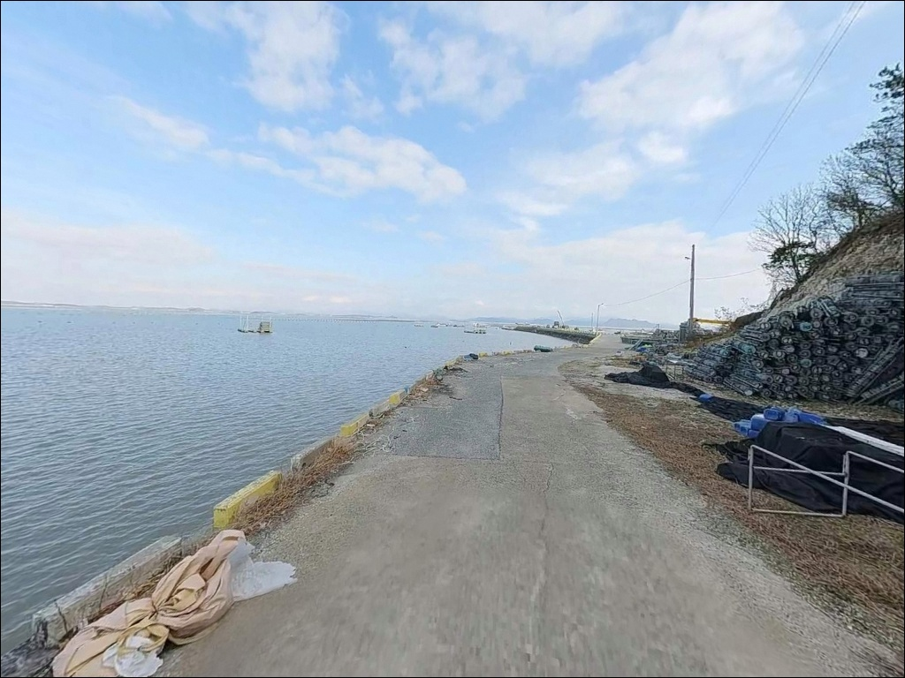
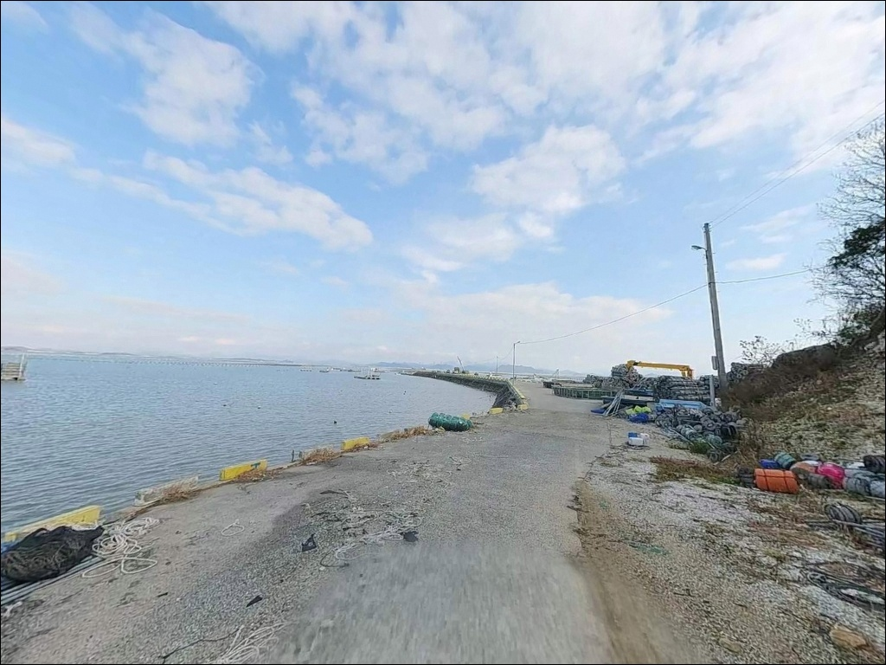
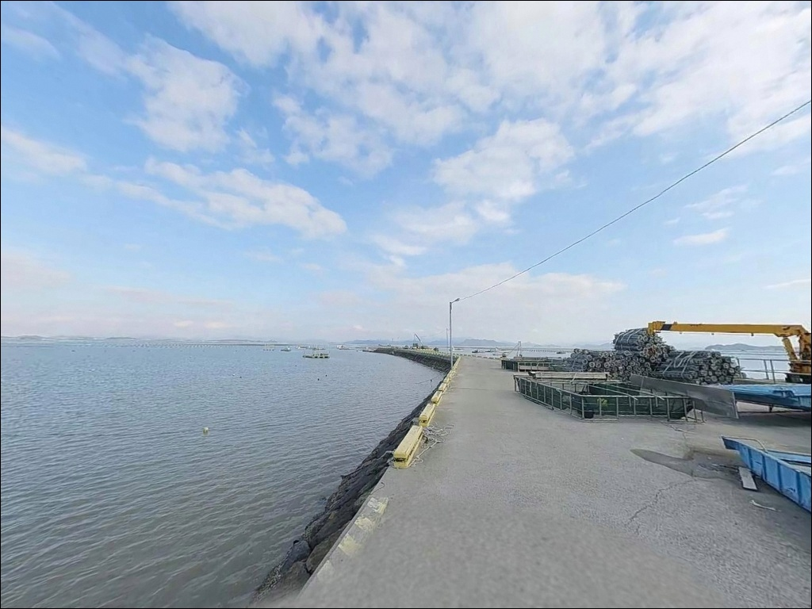
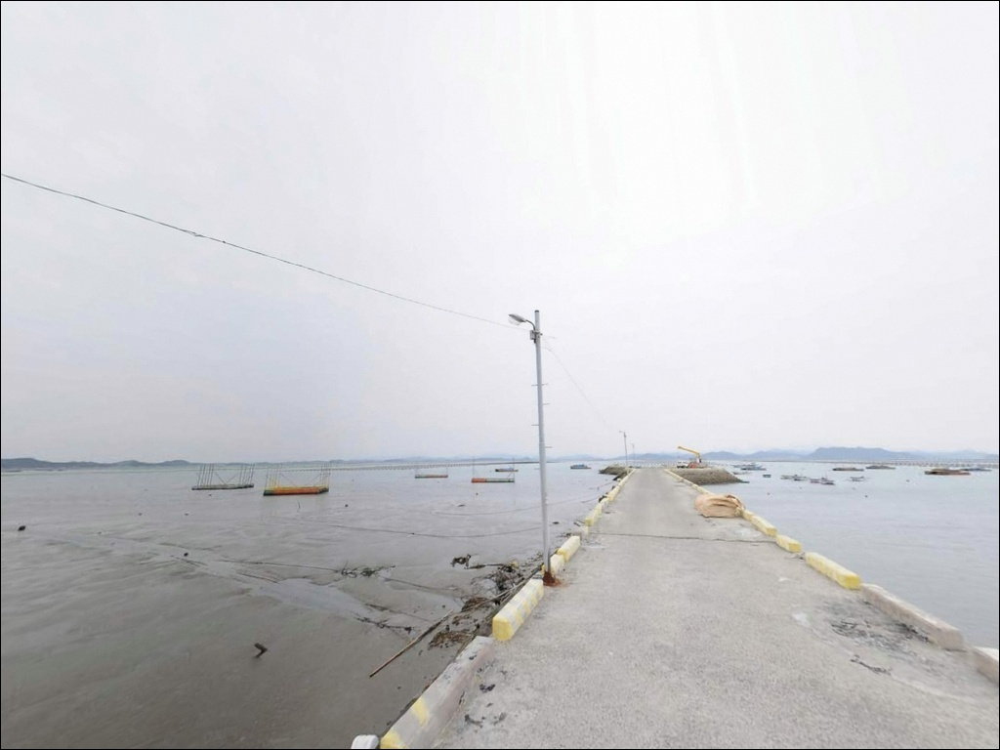
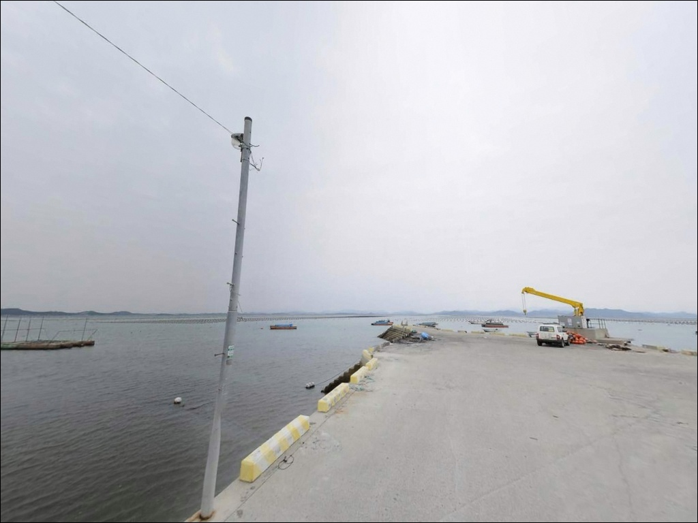
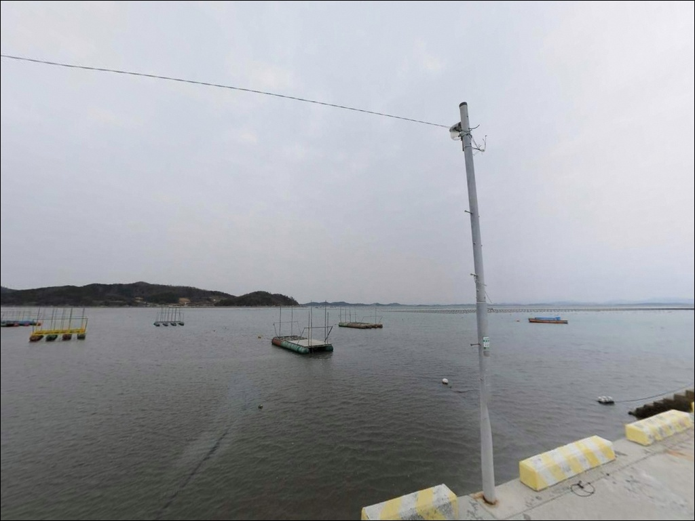
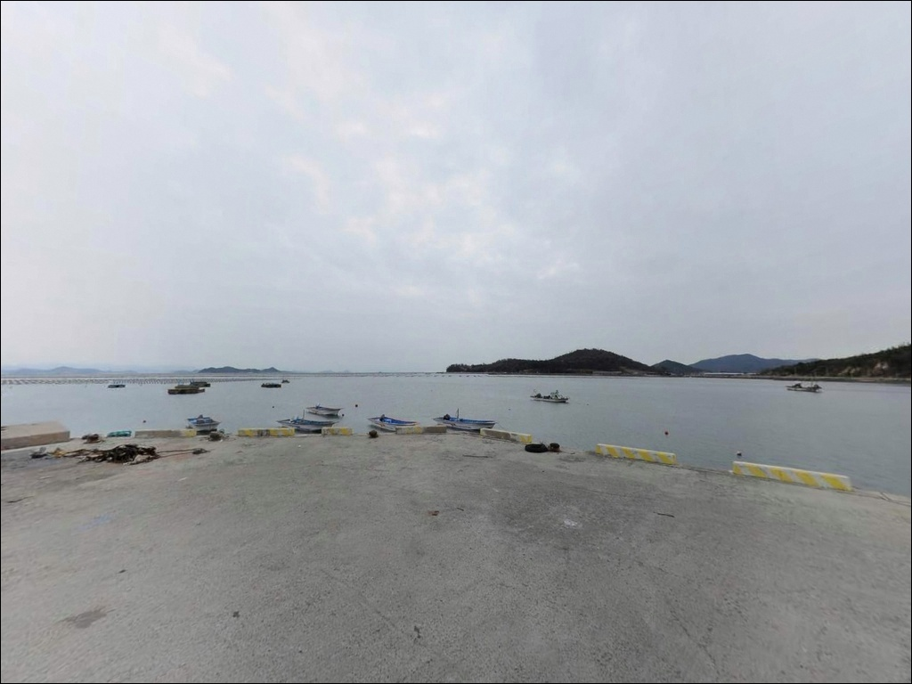
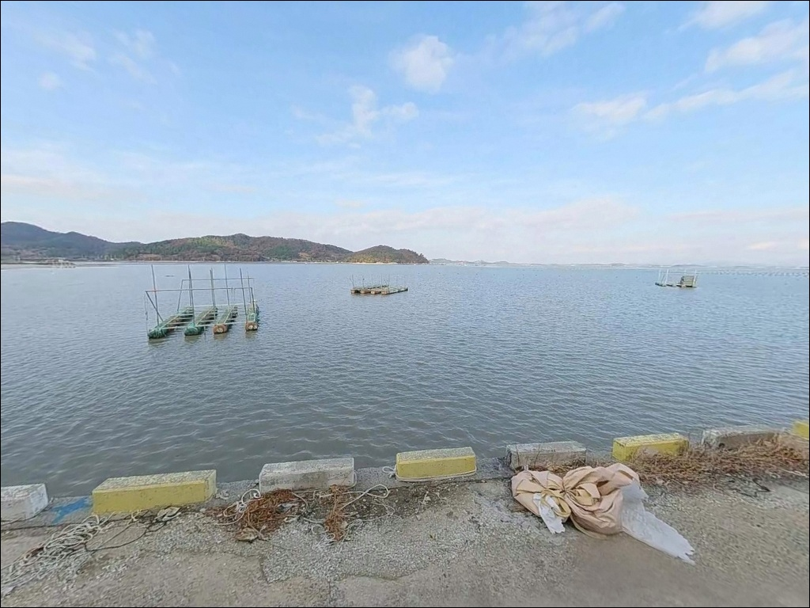

인성포구, 진도 전남 진도군 노을빛이 스며드는 차박, 낚시 겸용 감성 장소


포인트 안내
인성포구
전남 진도군 고군면 내산리 627
물때 확인 없이 인성포구를 찾으면
펄 바닥이 드러난 내만 포구에서
낚시 자체가 성립되지 않는 상황을 맞닥뜨립니다.
조석 간만 차가 큰 진도 북부 해역에서는
조류 타이밍이 조과의 전부를 결정하며,
사리 전후에는 어떤 채비도 버티기 어려운
수준까지 유속이 빨라집니다.
이 글은 인성포구의 지형 조건,
인접 포인트 활용법, 물때 판단 기준을
중심으로 정리합니다.
조황 단정이나 특정 어종 보장은
이 글의 범위에 포함되지 않습니다.

1. 포인트 위치 및 진입 동선 분석
인성포구는 진도 북동쪽 해안선에서
해남 화원반도 방향 수로를 면한 위치에 자리합니다.
지방도 801호선에서 내산리 해안가 방향으로
이어지는 마을 진입로를 통해 접근하는 구조로,
포구 안쪽까지 도로 폭이 좁아지는
전형적인 어촌 마을길 형태입니다.
소형차 기준으로 진입은 무난하지만
대형 SUV나 캠핑카는 회차 공간이 제한적입니다.
출발 전 위성지도로 마지막 구간의 폭과
회차 가능 여부를 먼저 확인하는 것이
헛걸음을 막는 기본 조건입니다.
주차는 선착장 주변 공터나 방파제 초입부를
활용하는 방식이 일반적입니다.
다만 어민 차량 통행과 어선 출입이 이루어지는
공간이라 계류된 어선 방향과
작업 동선을 먼저 확인한 뒤 자리를 잡아야 합니다.

2. 차박 환경 평가 및 야간 체류 여건
인성포구는 어촌정주항 성격의 작은 포구라
공식 차박지로 운영되는 공간은 아닙니다.
선착장 주변은 어민 작업이 이루어지는
생활 공간이어서,
장박보다는 낚시 후 짧게 머무르는
방식이 현실적인 체류 형태입니다.
민가와의 거리가 가까운 소규모 어촌 구조라
야간에는 소음과 조명에 각별히 신경 써야 합니다.
가로등 밀도가 높지 않을 가능성이 있어
개인 조명 장비는 필수입니다.
차박을 메인으로 삼기보다는
인근 벌포항이나 가계해수욕장 방향을
차박 거점으로 분리해 두는 구성이
훨씬 여유 있는 동선입니다.


3. 주변 편의시설 및 인프라 현황
인성포구 주변은 소규모 농어촌 마을 생활권으로,
포구 인근에서 편의점이나 식당을
기대하기 어렵습니다.
완전 자급 체제로 진입하는 것이
현실적인 준비 방식입니다.
식수, 얼음, 낚시 소품, 연료는
출발 전 모두 갖춰 두어야 합니다.
반경 10km권으로 이동하면
벌포항이나 초평항 방향을 거쳐
고군면 일대 상권을 이용할 수 있습니다.
인성포구는 생활 인프라와 거리가 있는 포인트이므로
부족한 소품은 출발 전 고군면 소재지에서
미리 채우고 진입하는 동선이 효율적입니다.

4. 조류 알아야 헛걸음을 막는 이유
인성포구 방문 전에 가장 먼저 확인할 것은
물때입니다.
진도 북부 해역은 조류가 강하기로 알려진 수역이라
사리 전후에는 채비 컨트롤이 어려운 수준까지
유속이 올라갑니다.
바다타임에서 인성포구 또는 인근 벌포항 기준
물때를 확인하고
조금 물대의 초들물~중날물 타이밍을 노려
출발 시각을 맞추는 것이 기본 전략입니다.
기상청 예보도 출발 당일 아침 다시 한번 확인하면
포인트 이동 판단에 도움이 됩니다.
소형 어촌 포구는 어선 조업이 이루어지는
생활 공간이기도 합니다.
어선 이동 동선과 슬로프 주변에는
주차나 낚시 자리를 잡지 않는 것이 기본 매너이며,
야간 낚시 시에는 헤드랜턴과
구명조끼를 반드시 착용해야 합니다.

5. 지형 기반 낚시 여건 분석
인성포구는 해남 화원반도와 마주보는
수로 인접 내만권에 위치합니다.
바다타임에서 이 포구를 기준으로
등록된 대표 포인트인 장사등골 남측 방파제의
저질이 '펄'로 표기되어 있어,
포구 전면은 갯벌·펄 바닥이 발달한
내만형 지형으로 구성된 구조입니다.
펄 바닥 내만 지형에서는
사리보다 조금 물대 초들물~중날물 구간이
조류가 적당히 흐르는 타이밍입니다.
이 구간에 원투 채비가 자리를 잡으면
바닥층 어종을 공략하기 좋은 조건이 됩니다.
선착장 발밑 수심은 간조 시
현저히 낮아질 수 있어
만조 전후 타이밍을 확인하는 것이 먼저입니다.
인성포구 일대 펄 바닥 구조에서는
초들물~중날물 타이밍에 조류가 적당히 살아나는 구간이
원투와 찌낚시 모두에 유효한 조건입니다.
최신 조황은 출조 전 꼭 검색해 보시기 바랍니다.


6. 포인트에 적합한 낚시 스타일
이 포인트에서 가장 기본이 되는 방식은
원투낚시입니다.
펄 바닥이 넓게 발달한 내만 구조에서는
채비를 멀리 보낸 뒤
조류가 흐르는 들물 타이밍을 노리는 방식이
잘 맞는 형태입니다.
붕장어, 노래미, 도다리류를
기대해 볼 수 있는 지형 조건입니다.
찌낚시와 릴찌낚시도 방파제 끝단 구간에서
시도해 볼 만합니다.
장사등골 남측 방파제는 돌돔·감성돔·우럭을
대상으로 하는 다양한 채비 조합이
소개되는 포인트입니다.
초들물 타이밍에 맞춰 방파제 끝단 외항 쪽으로
찌를 흘리는 방식이 어울립니다.
루어낚시도 선착장 주변과 방파제 경계면에서
활용 가능한 스타일입니다.
농어류와 우럭을 노리는 가벼운 채비로
포구 주변 구조물 인근을 탐색하는 방식이
적합합니다.
가을철에는 인근 내만권 특성상
갑오징어 에깅도 시도해 볼 수 있는
시즌 조건이 형성됩니다.
장사등골 남측 방파제는 인성포구에서 도보 접근이 가능한 위치로,
인성포구와 함께 묶어 탐색하는 동선이
이 권역에서 가장 효율적인 출조 방식입니다.

7. 대안 포인트 및 플랜 B 동선
인성포구 조황이 기대에 못 미치거나
진입 여건이 여의치 않을 때는
벌포항 방파제가 첫 번째 대안입니다.
고군면 벌포리에 위치한 지방어항으로,
인성포구에서 2km 안팎 거리이며
방파제 규모와 포인트 선택 폭이
훨씬 넓은 편입니다.
인성포구 바로 옆에 붙어 있는
장사등골 남·북측 방파제는
사실상 동일 생활권 포인트로 보는 것이
적합합니다.
남측(215m), 북측(607m) 방파제를
한 물때 안에 번갈아 탐색하면서
입질 구간을 찾아가는 방식이
이 권역 특성에 잘 맞습니다.
차박 거점이 필요하다면
인성포구에서 차량으로 이동 가능한
가계해수욕장(고군면 금계리 방향)이
현실적인 대안입니다.
넓은 주차장이 갖춰진 이곳을 차박 거점으로 삼고
낚시는 인성포구·벌포항·초평항을
역할 분리해 운용하는 동선이
진도 북부 출조 계획의 효율적인 구성입니다.

조용히 먼저 답사해 두면 좋은
진도 북부의 한적한 포인트입니다
원투낚시와 찌낚시를 즐기는 낚시인이라면
인성포구의 펄 바닥 내만 지형은
익숙한 방식이 잘 맞는 구조입니다.
장사등골 남·북측 방파제와 함께
한 물때 안에 순환 탐색이 가능한 거리라
생활 낚시 중심의 하루 출조로
묶기 좋은 포인트군입니다.
반면 인프라나 차박 여건을 기대하고 방문하면
실망스러운 상황이 생길 수 있습니다.
공간이 협소하고 편의시설이 없는 포인트라
물때 확인, 자급 준비, 진입로 사전 점검
세 가지를 갖추고 접근하는 것이 기본입니다.
아직 많이 알려지지 않은 진도 북부의
이 조용한 포구를 먼저 답사해 두면,
인근 방파제군과 연계한 나만의 출조 동선이
만들어지는 포인트입니다.
조용한 어촌 포구에서 물때를 맞춰 낚시하고,
가계해수욕장이나 가까운 해안도로에 자리를 잡아
하룻밤 머무는 출조 계획이라면,
인성포구는 진도 북부 동선의
첫 번째 탐색지로 잘 어울립니다.